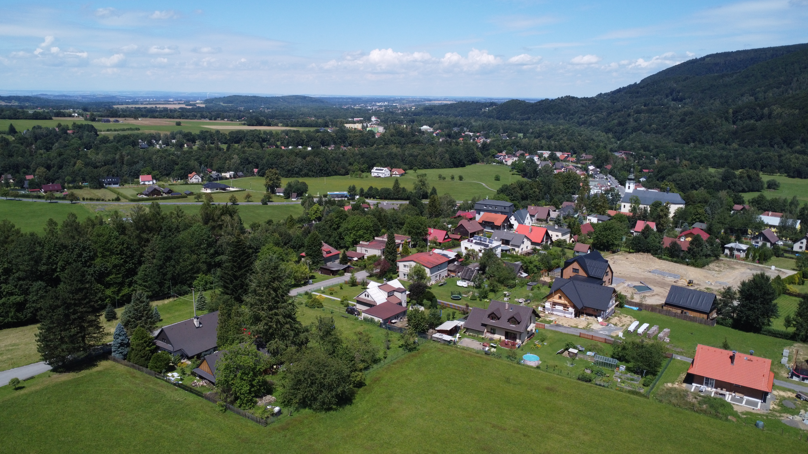
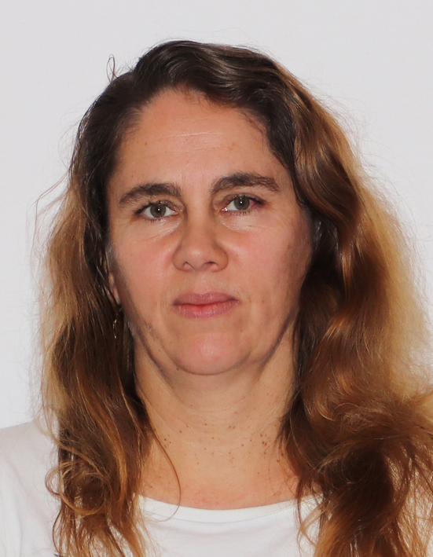
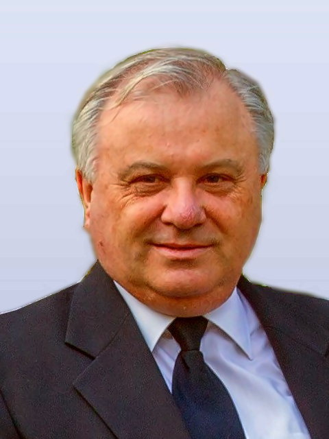

Otevřená obec
Zveřejníme důležité smlouvy, investiční záměry i stav projektů. Zavedeme pravidelná setkání se starostou, jednoduché podávání podnětů a hlasování o prioritách.
TransparentnostInformace včasObčanský dialog
Zdravý rozum pro naši obec
Chceme obec, která naslouchá, hospodaří s rozumem a myslí na každou generaci.

Jsme lidé z Pražma. Záleží nám na tom, aby se tu dobře žilo — dnes i za deset let.
Do vedení obce chceme přinést otevřenost, respekt k občanům a rozhodování, kterému je rozumět. Bez zákulisí. Bez prázdných slibů. S konkrétní prací, kterou může každý sledovat.
Pravidelná setkání, podněty občanů a zpětná vazba, která nekončí v šuplíku.
Rozhodnutí, smlouvy i investice budou srozumitelné a dohledatelné.
Každý větší projekt musí dávat ekonomický i praktický smysl.
Konkrétní kroky pro otevřené, bezpečné a živé Pražmo.
Zveřejníme důležité smlouvy, investiční záměry i stav projektů. Zavedeme pravidelná setkání se starostou, jednoduché podávání podnětů a hlasování o prioritách.
U každé větší investice předem vyhodnotíme náklady, přínosy a dlouhodobou udržitelnost. Rozhodnutí musí být přínosné pro obec, ekonomicky únosné a v souladu s její dlouhodobou strategií. Budeme získávat dotace tam, kde dávají smysl, a omezíme zbytečné výdaje.
Zefektivníme provoz hotelu Travný tak, aby nebyl opakovaně ve ztrátě a nemusel být trvale dotován z obecních peněz. Ušetřené prostředky chceme vracet do zkrášlení obce, práce s mládeží a dalších užitečných projektů. Podpoříme jeho smysluplnou rekonstrukci na moderní, otevřený a živý multifunkční dům — místo pro služby občanům, komunitní i každodenní život celé obce.
Budeme pokračovat v opravách komunikací včetně ulice Lipová, řešit zimní bezpečnost na ulici Kostelní a věnovat pozornost pořádku v centru, u zastávky Obecník i na dalších frekventovaných místech. S obcí Raškovice chceme zvýšit bezpečnost a komfort cestujících na zastávce Raškovice–Ondráš.
Vytvoříme samoobslužnou klubovnu pro náctileté i dospělé s pingpongovým stolem, deskovými hrami a moderním vybavením. Postavíme workoutové hřiště, zpřístupníme zahradu u MŠ pod dohledem správce a po přechodu MŠ na jedno dětské oddělení proměníme uvolněné prostory v komunitní centrum s možností jógy, pilates, výtvarných dílen i jednoduché tělocvičny. Podpoříme tradiční kulturní akce, všechny pražmovské spolky a zapojení mladých rodin i seniorů.
Podpoříme obecní fotovoltaiku na střeše MŠ a sdílení vyrobené energie s dalšími obecními budovami, zejména hotelem Travný a obecním úřadem. Podmínkou bude energetická a ekonomická studie s jasnou dobou návratnosti. Zároveň budeme řešit znečištění z lokálních topenišť a informovat o čistším vytápění a dostupných dotacích.
Pokud to rozpočet dovolí, podpoříme rekonstrukci starého obecního úřadu na dva obecní byty pro potřebné. Budeme důsledně chránit ovzduší a životní prostředí a podporovat ochranu zdraví všech obyvatel Pražma.
Pražmo má na víc.
A společně to zvládneme.
Práce pro obec není funkce. Je to závazek vůči sousedům.

IT vývojářka a projektová manažerka, na Pražmě žije od dětství.
Pracuje v menší softwarové firmě a věnuje se také tendrové dokumentaci, realizaci zakázek a jednání se zákazníky v zahraničí. Pražmo je její srdeční záležitost.
Mzdová účetní · 55 let
Stolař · 46 let
Technický pracovník · 55 let

Bývalý starosta a zastupitel, na Pražmě žije od roku 1983.
Přináší zkušenosti s vedením obce, kontrolou, rozpočtem, účetnictvím a dotacemi. Dlouhodobě se věnuje také skautingu.
OSVČ · 58 let
Mechanik · 61 let
Fotografie a podrobnější profily kandidátů budeme postupně doplňovat.
Máte nápad? Řekněte nám o něm.
Chceme slyšet, co vás v obci těší i trápí.
Napište nám ↗